The augmenter (trained on grayscale brightfield P. aeruginosa branching colonies) run on a two-species fluorescence co-culture (KL set) it never saw. This is the "does it generalize to a novel species?" test.
| Metric | In-domain | OOD (KL 2-species) | change |
|---|---|---|---|
| FID ↓ (realism) | 74.1 | 345.9 | 4.7× worse |
| realism vs sibling ↓ (LPIPS) | 0.314 | 0.817 | 2.6× worse |
| baseline: real vs real | 0.232 | 0.362 | — |
| realism ÷ baseline (normalized) | 1.36× | 2.26× | the clean gap |
| realism vs source ↓ | 0.305 | 0.805 | 2.6× worse |
| diversity (LPIPS) | 0.254 | 0.286 | ~unchanged |
The ÷baseline row is the fair one: it divides out how variable real replicates are anyway. In-domain the model sits 1.36× the real-replicate distance; OOD it is 2.26×.
| Dataset | FID ↓ | realism vs sibling ↓ | baseline | ÷baseline | diversity |
|---|---|---|---|---|---|
| FINAL (core PA branching) | 76.9 | 0.354 | 0.260 | 1.36× | 0.287 |
| KUIZHU (held-out strains) | 110.3 | 0.321 | 0.275 | 1.17× | 0.263 |
| EMRAH (compact Pa/Kp) | 105.7 | 0.249 | 0.161 | 1.55× | 0.173 |
Real source (fluorescence, what the model saw) → its two generations → a real sibling replicate. Note the generations look nothing like either.
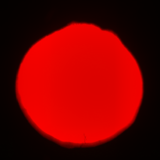
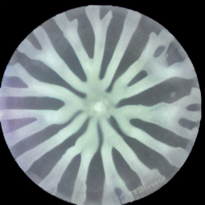
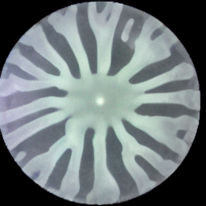
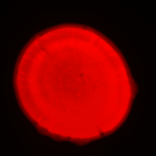
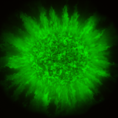
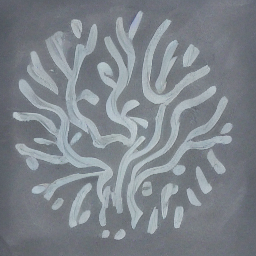
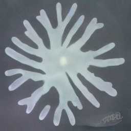
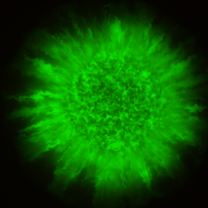
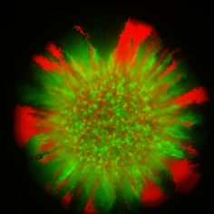
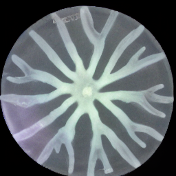
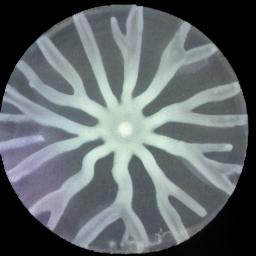
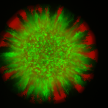
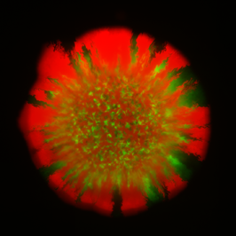
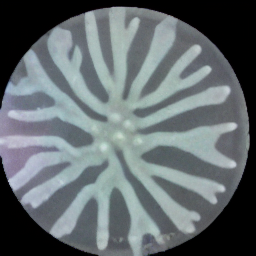
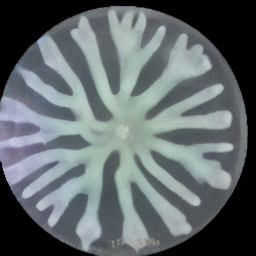
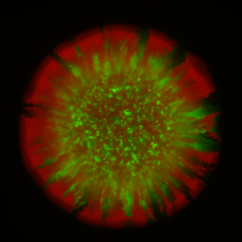
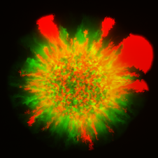
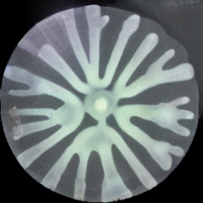
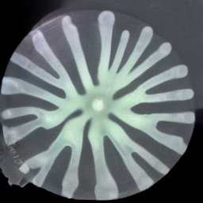
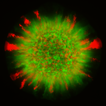
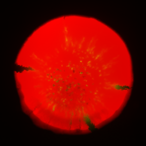
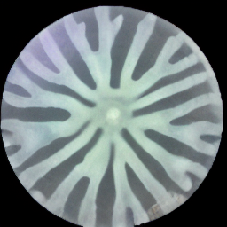
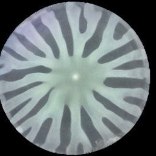
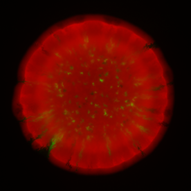
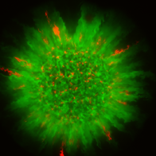
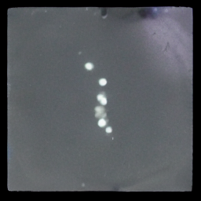
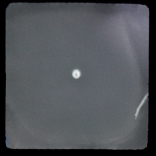
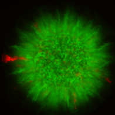
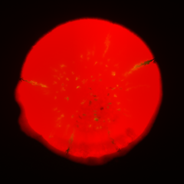
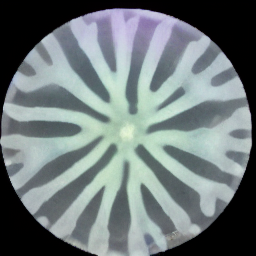
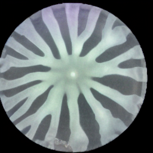
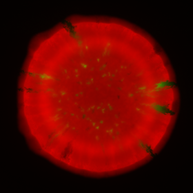
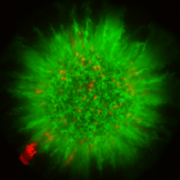
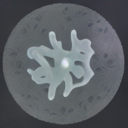
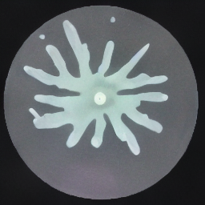
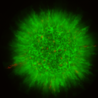
Every one is the same grayscale branching morphology, regardless of the (wildly different) fluorescent inputs — that sameness IS the failure.
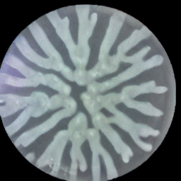
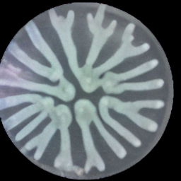
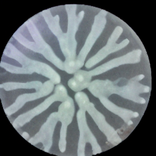
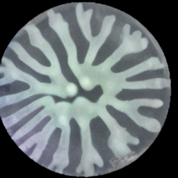
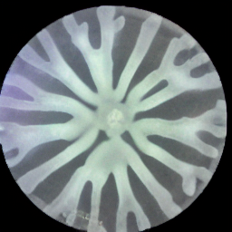
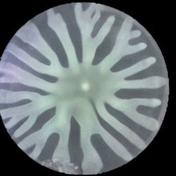
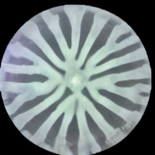
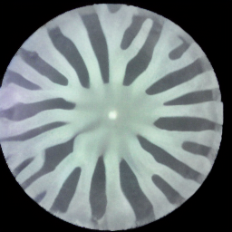
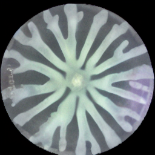
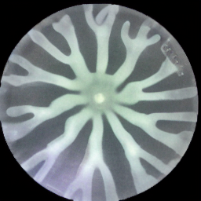
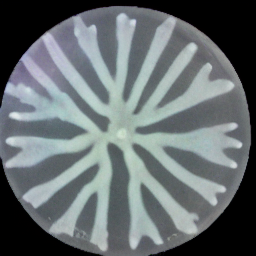
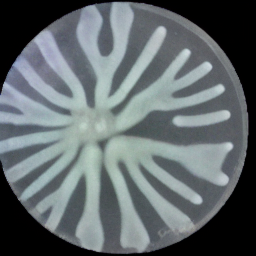
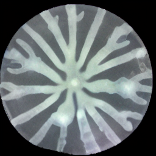
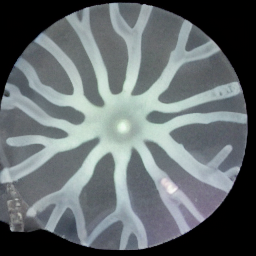